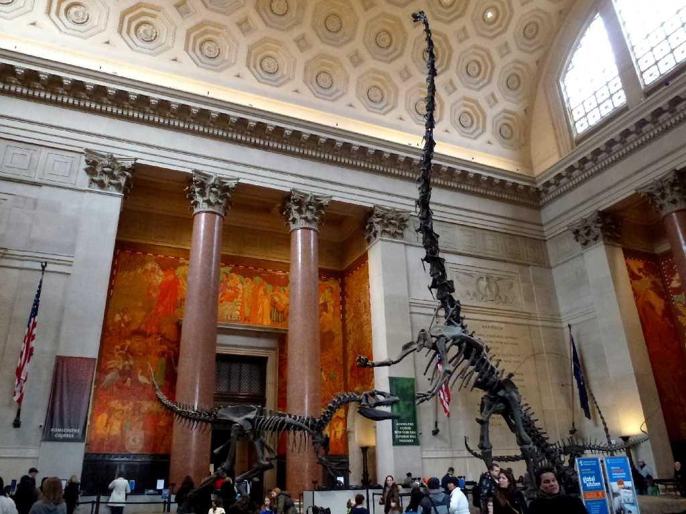
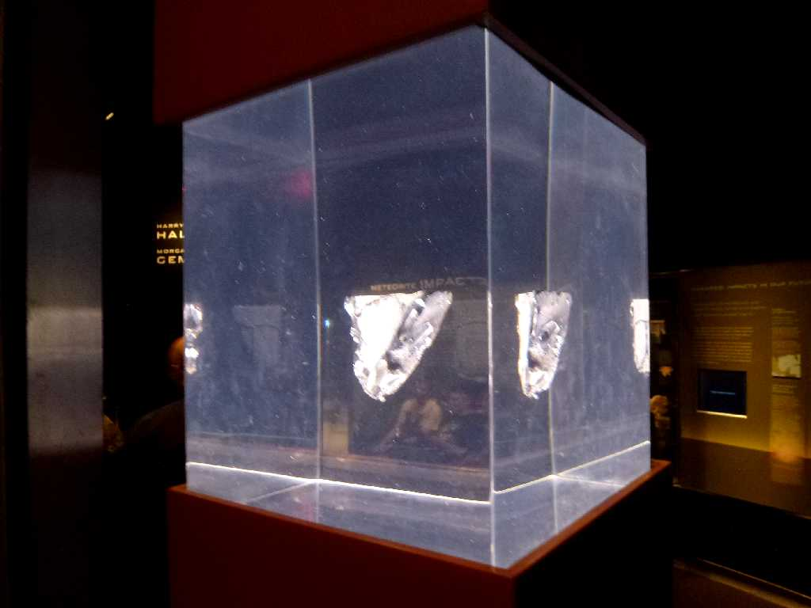
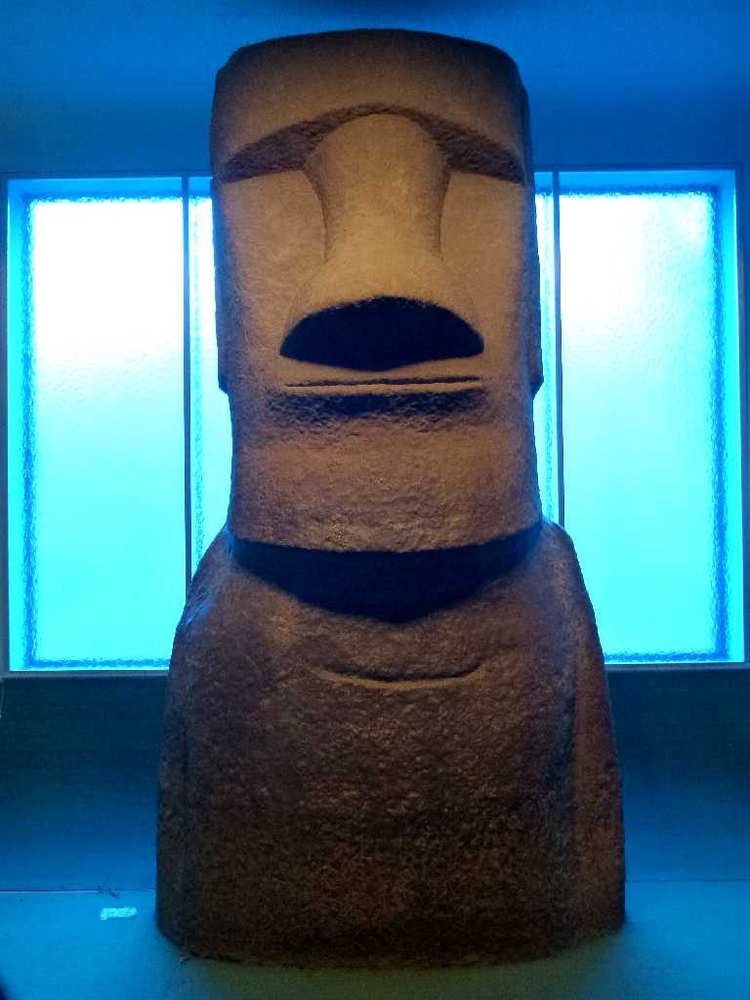
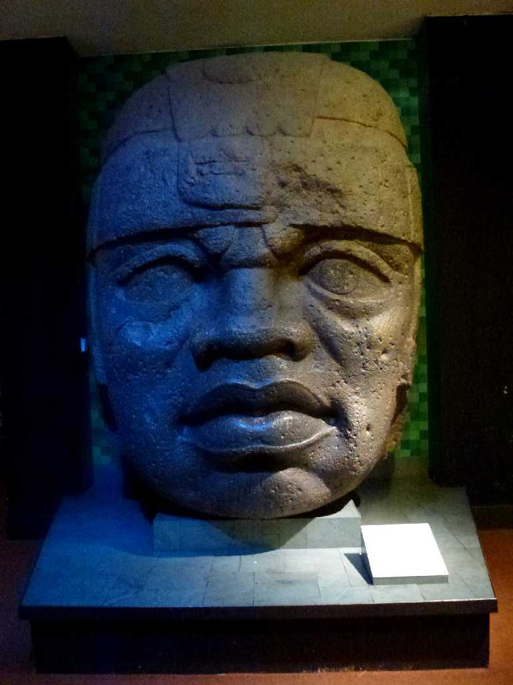
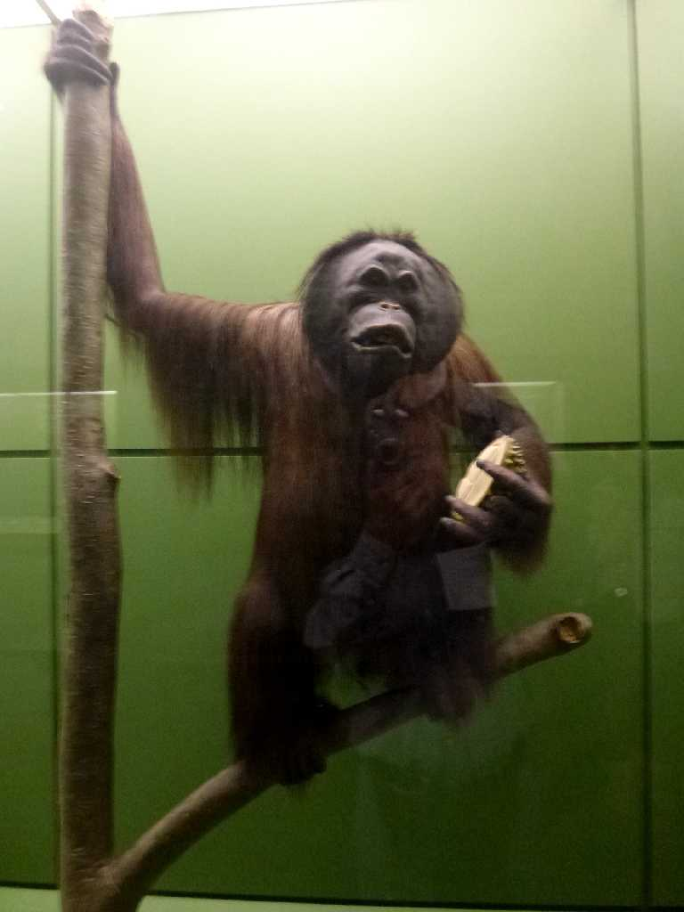
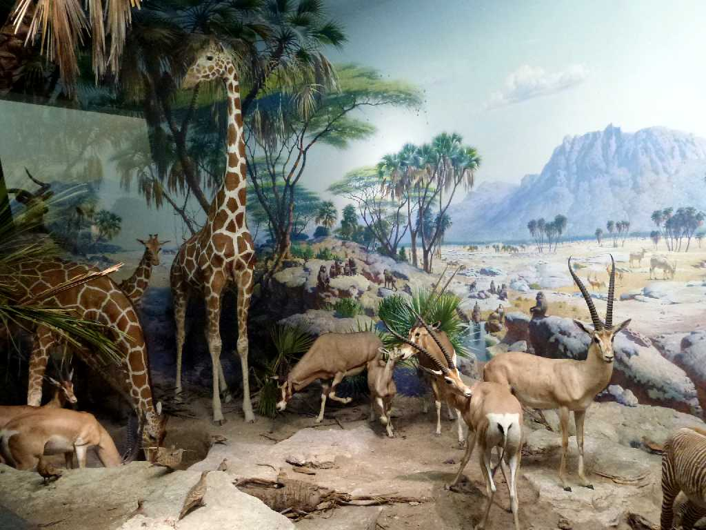
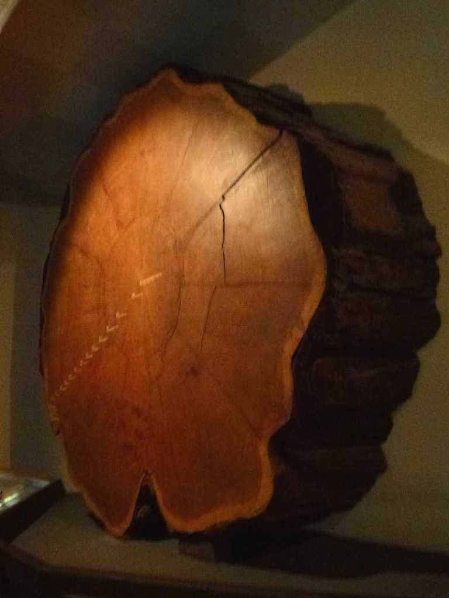
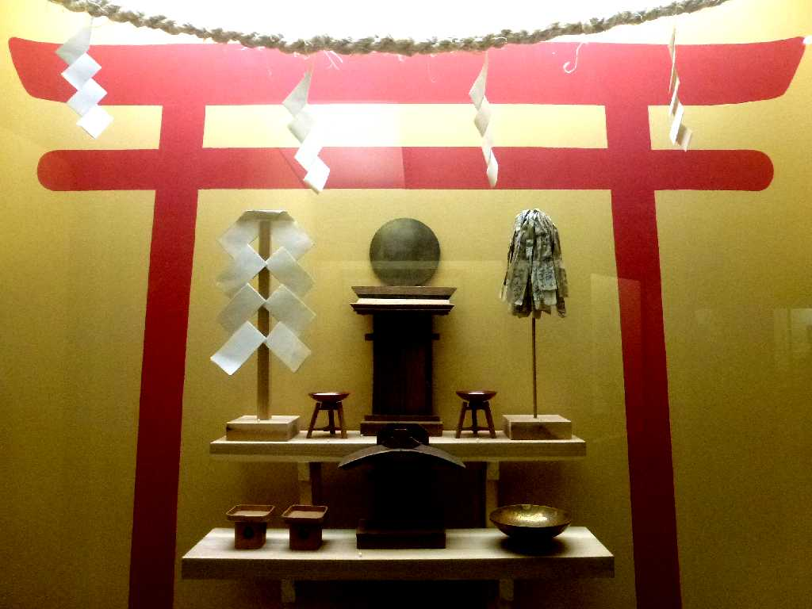
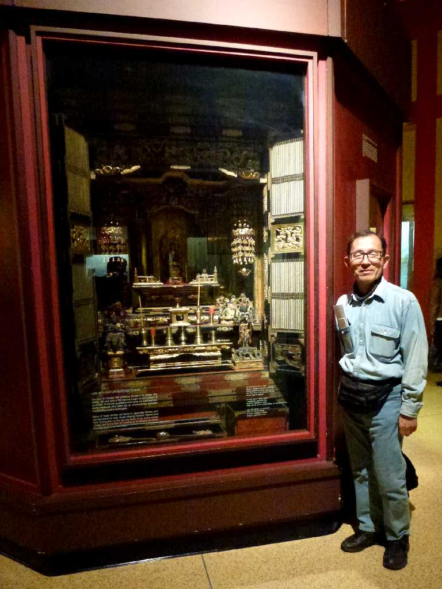

American Museum of Natural History New York

Moon Rock American Museum of Natural History

Moai Rapa Nui American Museum of Natural History

Colossal Olmec Head American Museum of Natural History

Orangutan American Museum of Natural History

Africa American Museum of Natural History

16foot Giant Sequoia Tree American Museum of Natural History

Japan American Museum of Natural History

February 22 2013 Japanese Section American Museum of Natural History
厳冬のニューヨークではアメリカ自然史博物館を１日開館から閉館まで鑑賞したがまるで世界一周旅行をして宇宙にも足を延ばした感がある